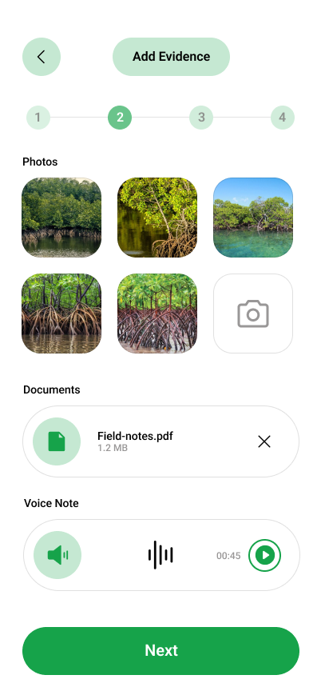
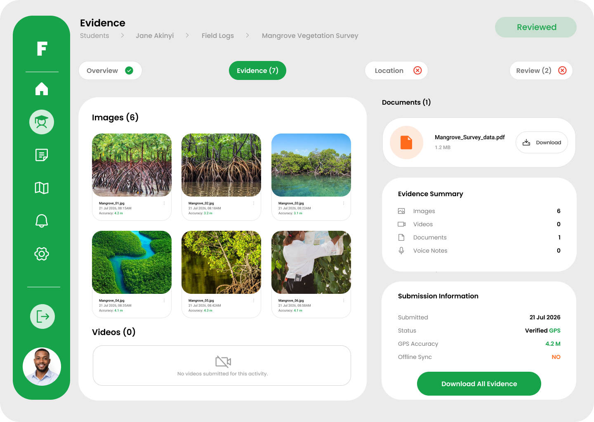
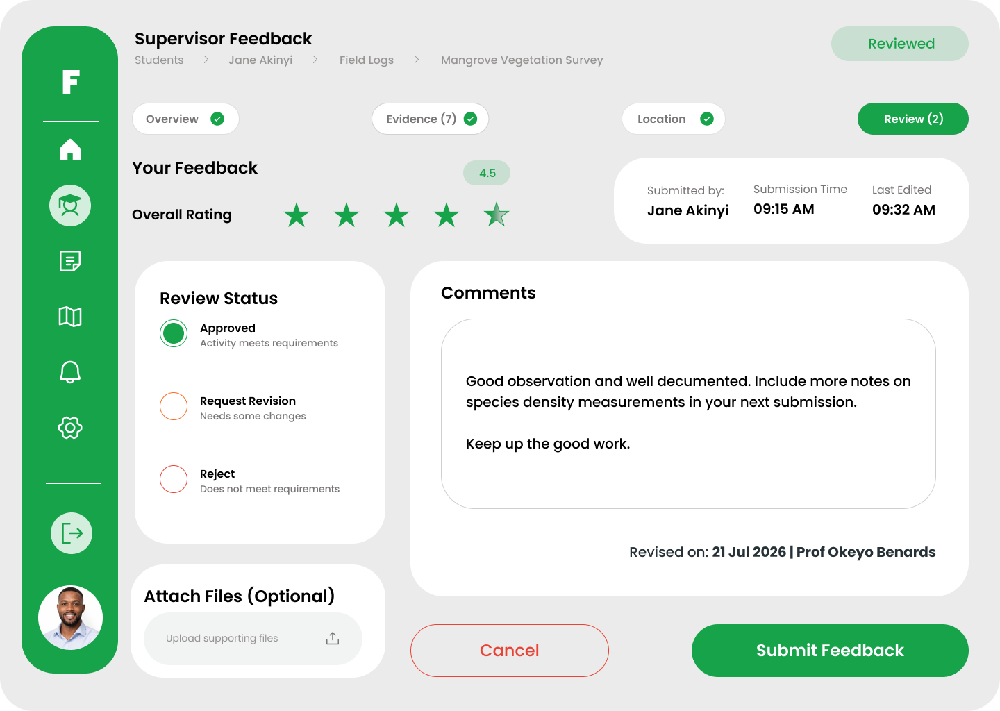

FieldTrack connects students in the field with their supervisors at the university. Log activities offline, verify GPS locations, and approve evidence easily in one place.


Students often conduct important research far away from the university campus. Traditionally, keeping track of this work relies on delayed paper reports, guesswork, or expensive travel for supervisors.
Physical site visits take too much time and money.
Manual reports often lack proof of location and time.
From checking in at the site to final supervisor approval, everything is connected.
Students use the mobile app to securely check into their site with an accurate GPS location.
Type notes and record observations on the go. The app works even when there is no internet connection.
Snap photos and upload documents to prove what was done. It automatically uploads when online.
Supervisors see the updates instantly. They can review the evidence, ask for changes, or approve the work.
FieldTrack gives students an easy-to-use mobile app to log their daily progress, without worrying about paperwork. Just open the app, log your work, and let it sync automatically.


Save hours of travel time. The web portal lets supervisors monitor student progress, review evidence, and approve activities right from their desk.


Supervisors get a live, interactive map showing where all their students are currently checked in.

Simple access for students, supervisors, and university administrators.
An easy mobile app for students to log activities, snap photos, and verify locations offline.
Download Android App →A secure web dashboard for supervisors to view map locations, review evidence, and approve work.
Open Portal →For the university to manage all departments, users, and overall system settings in one place.
Open Admin →FieldTrack was created with the challenges of postgraduate research at Pwani University in mind. It replaces messy paperwork and text messages with a clean, organized, and professional system.
Designed for EducationGive students the tools to easily document their work, and give supervisors the visibility they need to review it.